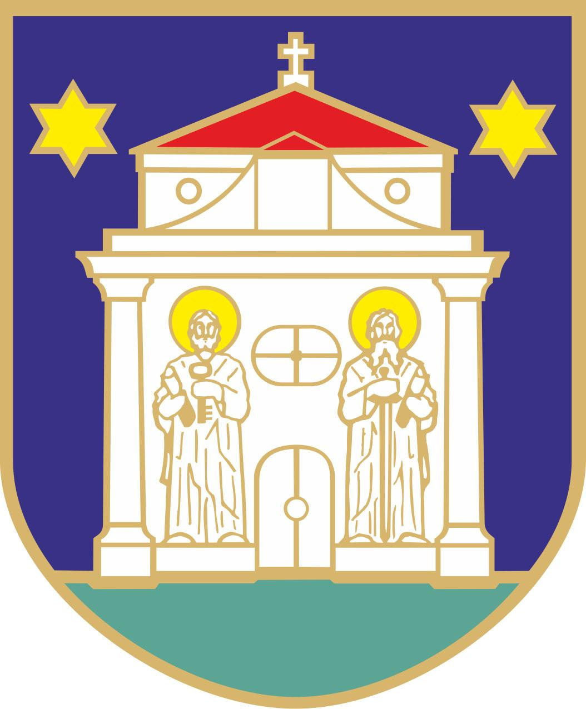
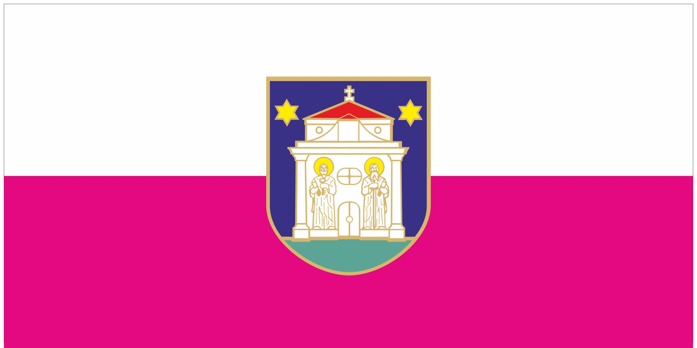

Đakovo je grad u istočnoj Hrvatskoj, koji administrativno pripada Osječko-baranjskoj županiji.
Grad nosi titulu "Srce Slavonije".
 Grb grada Đakova ima oblik stiliziranog štita koji s donje strane završava polukrugom, čija je visina prema širini 5:4. U središnjem dijelu grba je pročelje Župne crkve Svih svetih. S lijeva i desna od ulaznih vrata crkve nalaze se dva sveca. S desne heraldičke strane sv. Petra koji u desnici drži ključ, a u ljevici knjigu. S lijeve heraldičke strane je sv. Pavao koji u desnici drži mač, a u ljevici knjigu. Između svetaca nalazi se prozor oblika prekriženog kruha. S lijeve i desne strane krovišta tornja nalaze se dvije šestokrake zvijezde. Boje grba: opisna linija grba i štita je zlatna, krovište tornja crkve je crvena, žutom bojom obojene su zvijezde i aureole svetaca, crkva stoji na zelenoj tratini, pozadina grba je modra.
 Zastava Grada Đakova sastoji se od dvije boje: bijele i karminlila s grbom Grada u sredini. Omjer širine i dužine je 1:2. Boje zastave su položene vodoravno i to, s gornje strane: bijela i karminlila. Svaka boja čini polovinu širine zastave. Grb Grada smješten je u sredini zastave, tako da je gornji dio grba u bijelom polju zastave, a donji dio u karminlila polju.